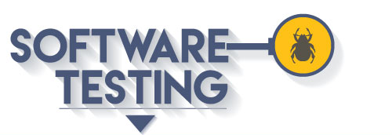

|
CURSO
DISEÑOS DE SITIOS WEB
- COD. 301122 |
 Galvez, V. (2018). Diseño de Sitios Web [web]. Recuperado de http://ruv.unad.edu.co/templates/unad2015/images/logoUNAD2015.png |
 Galvez, V. (2018). Diseño de Sitios Web [web]. Recuperado de https://www.testbytes.net/wp-content/uploads/2016/02/27-2-2016-Role-of-Software-Testing-in-Development.jpg |
204027-
Documentación y Técnicas de Prueba de Software |
{kind=link}
{kind=link}
|
|
|
|
Material de Apoyo
|
Youtube,(Alcenit Corporation). (2015). Alcenit Corporation Pruebas de Software (Testing de Software) - Entrevista a Javier Marchese. Recuperado de https://www.youtube.com/watch?v=pII2WpxJQg4 |
Youtube,UCAM Universidad Católica de Murcia). (2015). Alcenit Corporation Ingeniería del Software - Ciclo de vida - Raquel Martínez Recuperado de https://www.youtube.com/watch?v=CSgdhH5gp_U |
Fuentes de
Apoyo , Mejores Practicas y estandares en cuanto a tensting se
refiere. 2018). Diseño de Sitios Web [web]. Recuperado de https://i.blogs.es/a19bfc/testing/450_1000.jpg |
Prueba de Software Autor: Luis Vinicio León CarrilloAaron Moreno Monro Sitio de Publicación: Software Guru |
(2018). Diseño de Sitios Web [web]. Recuperado de https://www.testergame.com/wp-content/uploads/2014/02/pruebas-de-rendimiento.gif |
{kind=link}
{kind=link}
|
Copyright © 2018 por Victor Gálvez & “Diseño de Sitios Web , UNAD”.Todos los derechos reservados. Follow @universidadunadEncuentranos en https://www.unad.edu.co/ |